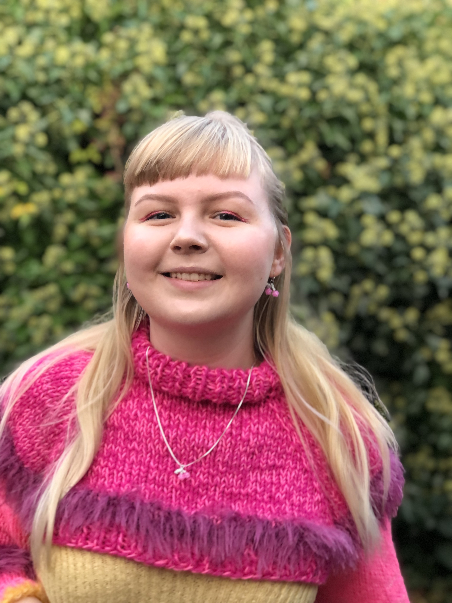

Illustrations
On this page, you will find creations of digital drawings or GIFs, made with either Adobe’s Illustrator, Photoshop Fresco or Animate, as well with my Wacom-tablet.
Digital art
Well of Christiansfeld
About the product
As part of a project working with Museum Kolding about the wells in Christiansfeld, I was inspired to create this. It is created with the Adobe Fresco app for iPhone.
Animation
Sakura
About the product
GIF created and drawn with Adobe Animate, within the first month of my multimedia education.

Digital art
Self-portrait
About the product
Portrait of me created with Adobe Illustrator, as a pentool exercise.
Reference photo on the right.
-

- 

Cecilie Bobjerg Cashbee
E-mail:
sillebobjerg@hotmail.com
Mobile:
+45 29 17 93 33